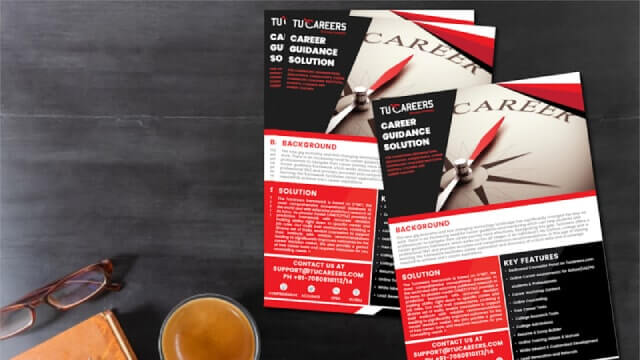
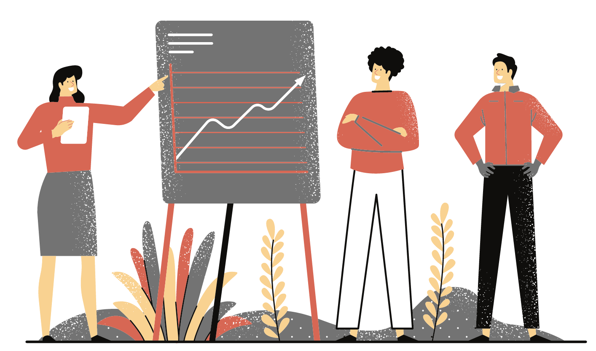

Connect To Careers, Courses & Counsellors
GLOBAL
FRAMEWORK
METHODICAL
EXPLORATION

ANALYTICS
DRIVEN
The World's Most Accurate
Career Test
Take our well researched , accurate psychometric career test to make the right education, skill and career choice.
Read MoreSalient Features
Career Guidance Across Age Groups
Career Spark Lite
For school students in Grades 8 and below for world of work exploration
Career Spark Basic
For school students in Grades 8 and below for world of work exploration
Career Spark Advanced
For school students in Grades 8 and below for world of work exploration
Career Ignite
For school students in Grades 8 and below for world of work exploration
Career Energize
For school students in Grades 8 and below for world of work exploration
Special Needs
For school students in Grades 8 and below for world of work exploration
CAREER COUNSELLING SOLUTION
Individual
Career planning and decision support across a lifetime.
Career Counsellor
Career planning and decision support across a lifetime.
School/College
Career planning and decision support across a lifetime.
Career guidance platform
Introducing BEACON, a cloud based, shared
For lifelong career decision support...
Career guidance platform
Introducing BEACON, a cloud based, shared
At Tucareers, we understand the vital role career mentors, coaches & career counsellors play in the career decision process. Our extensively researched framework will provide accurate insights to effectively guide individuals to the most promising choices. Our best in class career planning framework, validated in research and build on O*NET is global and open.
Blog & FAQ's
Read about our framework and the world of work
SOLUTION FOR INDUSTRY
In the gig economy, increasingly professionals are taking responsibility of their own career paths. Introducing a unique analytics based solution for career planning, skill building and bespoke analytical research. Our career test evaluates fitment to specific roles across industries, providing the much needed decision support for enhancing role wise tenures, satisfaction and productivity.
Visit Role.Fit to Know MoreEMERGING NEED FOR CAREER GUIDANCE IN COUNTRIES LIKE INDIA
While career planning has always been relevant, significant changes to the traditional career paradigm and the rise of the gig economy have now made this an essential life skill. The need is even more acute in developing economies (like India) which lack comprehensive, non proprietary tests and where career decisions traditionally have been taken based on the vocations, opinions and instincts of parents and mentors. These traditional models of career decision can no longer be carried on in the light of advancements in technology and rapid globalization. The need of the hour, thus, is a framework which provides accurate recommendations and also broadens an individuals worldview. The Tucareers career tests are increasingly being used by several independent career counselors & mentors, career counselling and guidance organizations. Tucareers is thus one of the most comprehensive, widely used and accurate career assessment solution available. But don’t just take our word for it. Take one of our career test and decide for yourself!!
CAREER COUNSELLING AND GUIDANCE APPROACH
The trend currently is for individuals to pursue multiple careers in their lifetime. This is being called as the new career paradigm where the need for continuous learning is increasing by leaps and bounds, and gigs are becoming popular. Modern research advocates a self discovery based approach rather than a prescription based approach for discovery. The key is to equip individuals to fend for themselves across the various pivots in their professional lives, and be able to make consciously considered career and skill building choices. This includes looking into the current and future job markets, considering one’s own need for fulfillment, economic needs and work life balance.
About Tucareers.com
The choice of a career is among the most important decisions of our life….or so it should be. For most however, this choice is still made based on their instincts, and the word of others. Using the latest research in decision theories, psychometric assessments, analytics and data from the world’s largest occupational database, O*NET, we bring a unique, career planning framework to facilitate your search for the right job, education and skills, across your lifetime.
We use standardized and well researched psychological tests and assess a wide set of traits like interests, work styles, personality, abilities and work values. Our assessments also measure your preferred work contexts, skills and knowledge preferences thus providing a very comprehensive profile. Further our recommendations are based on actual data collected from industry professionals ensuring highly reliability and validity and we have formally validated results in published research. !!
As part of our career toolbox, we provide reliable career tests that work across an individuals lifetime and helps in career decision making. We have separate career tests for students in Grade 8-9, Grade 10, Grade 11 - 12, graduates, post graduates and working professionals. We also provide free personality tests like Myer Briggs, DISC and competency assessment, which help in self development and career planning. The Learning Styles assessments help students to understand how best they learn. The maladjustment inventory and the career test for kids with disabilities are emerging needs in schools and colleges.
.png)
The choice of a career is among the most important decisions of our life….or so it should be. For most however, this choice is still made based on their instincts, and the word of others. Using the latest research in decision theories, psychometric assessments, analytics and data from the world’s largest occupational database, O*NET, we bring a unique, career planning framework to facilitate your search for the right job, education and skills, across your lifetime.
We use standardized and well researched psychological tests and assess a wide set of traits like interests, work styles, personality, abilities and work values. Our assessments also measure your preferred work contexts, skills and knowledge preferences thus providing a very comprehensive profile. Further our recommendations are based on actual data collected from industry professionals ensuring highly reliability and validity and we have formally validated results in published research. !!